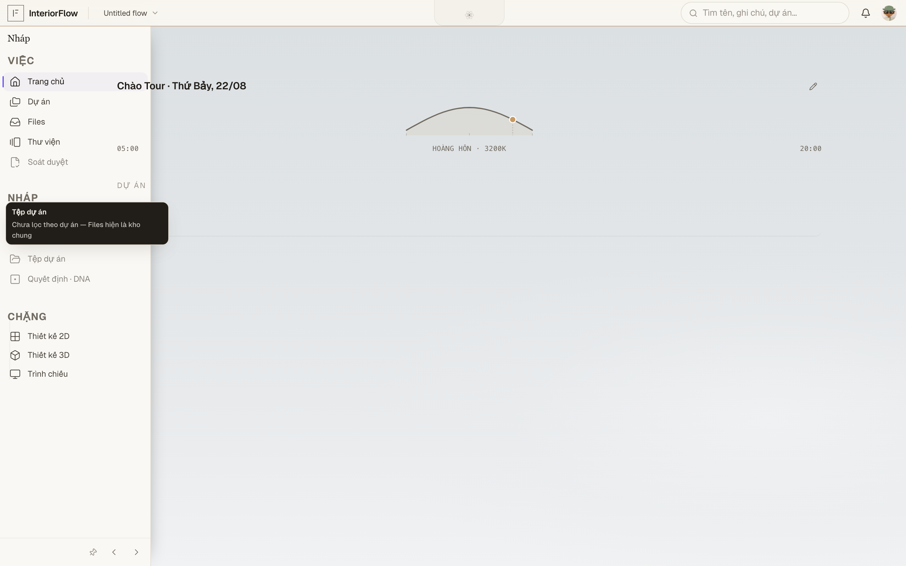
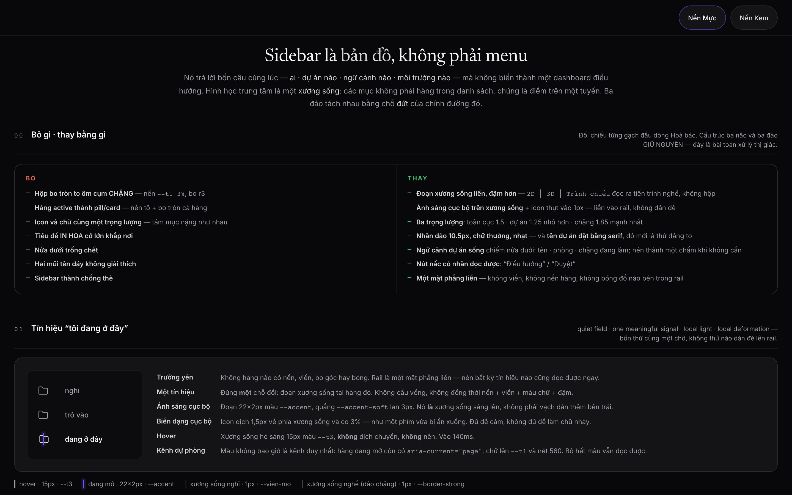
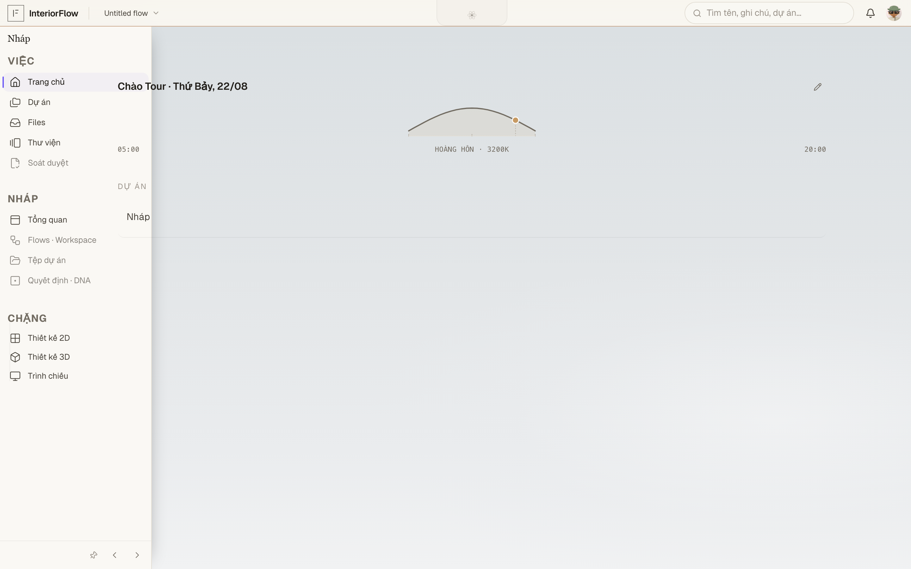

IF-UI-B03
Sidebar · bản đồ phải lùi sau việc
Current và target cùng một khung nhìn để Hoà so trực tiếp.



Xem căn cứ và phần còn lệch
Đã cóRail 52px; PEEK/OPEN/PINNED; dải active 2px.
Còn cần nhìnActive row còn giống pill; nhãn nhóm; ngữ cảnh dự án; nút nấc có nhãn.
Hoà nhìn giúp ba điều
- Thứ đập vào mắt đầu tiên là việc hay sidebar?
- Khi mở rộng, thông tin nào của dự án thật sự đáng hiện?
- Nấc thu gọn có đủ rõ mà không biến thành dải icon câm không?